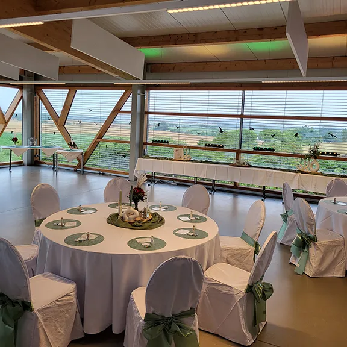
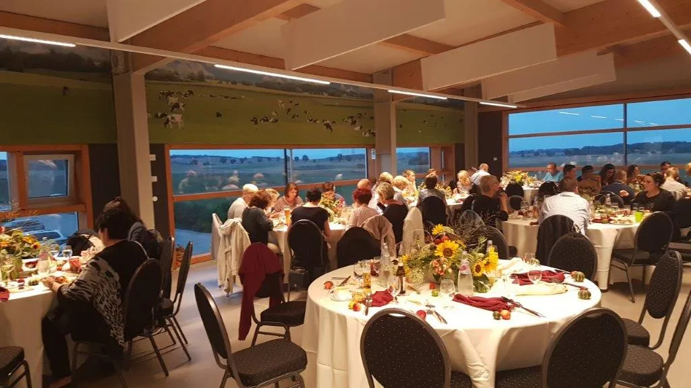
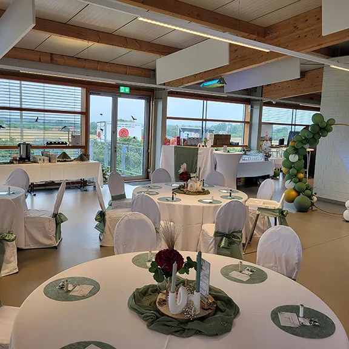
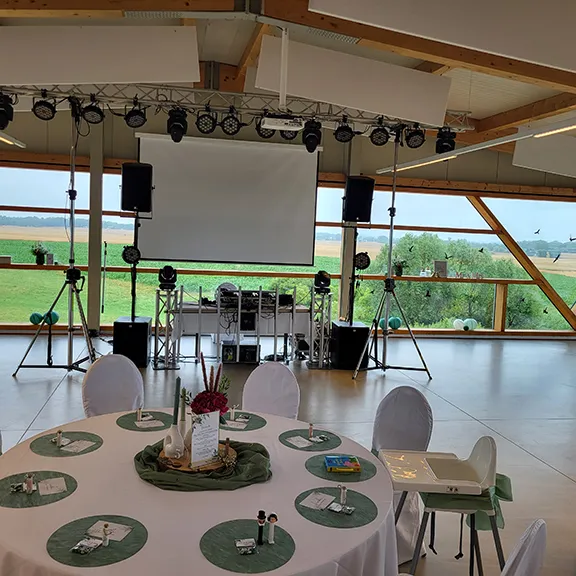
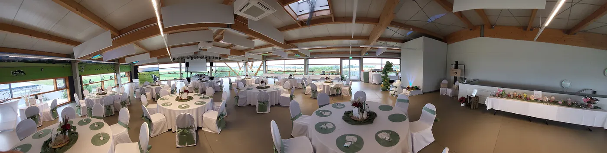
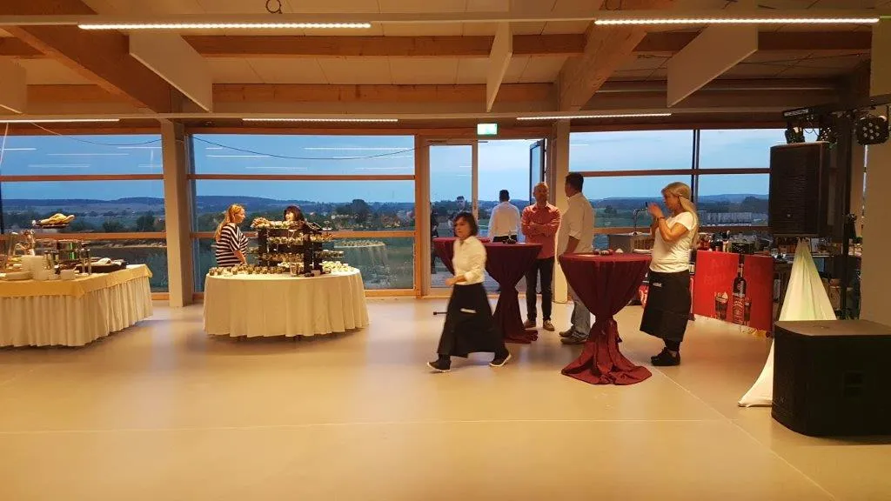
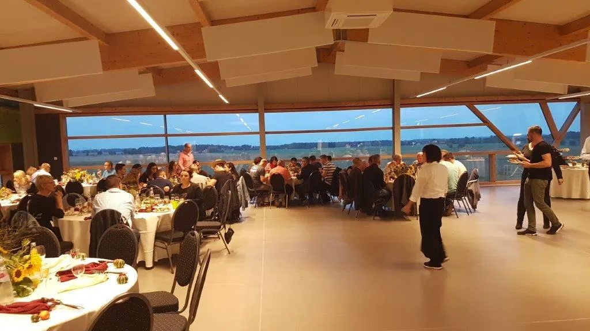
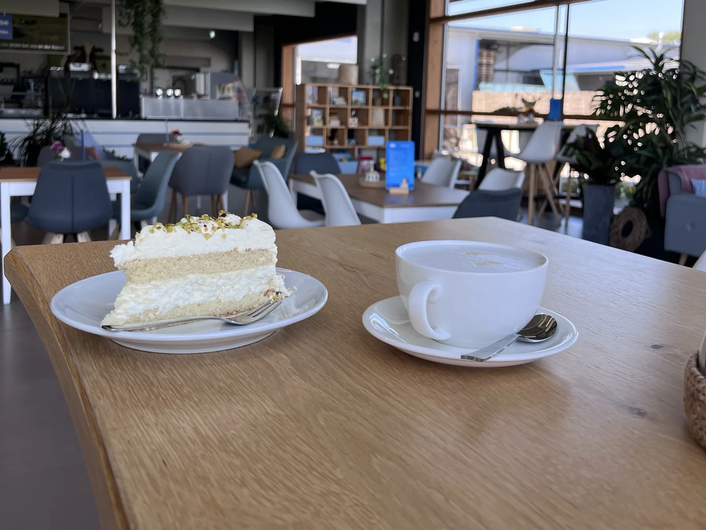

- Startseite
- Eventlocation
Bis zu 120 Gäste
Feiern mit Blick über die Uckermark
Im ersten Stock unseres Hofcafés feiert ihr mit bis zu 120 Gästen, mitten im Biosphärenreservat Schorfheide-Chorin. Ob privat oder für die Firma.


Auf einen Blick
- 1. Etage, mit Fahrstuhl
- Bis zu 120 Gäste
- Auch an Wochenenden buchbar
- Für Feiern und Seminare
- Gäste passen in den Raum
- 120
- mit Fahrstuhl und Treppe
- 1. Etage
- auch Wochenende und Feiertage
- 7 Tage
- Pakete zur Auswahl
- 3
Der Raum
Direkt im Biosphärenreservat Schorfheide-Chorin liegt der Hemme-Hof. Neben unserem beliebten Hofcafé und Milchladen bieten wir einen Eventbereich mit großer Fensterfront und weitem Blick über die Uckermark, für bis zu 120 Gäste.
Der Raum liegt in der 1. Etage, erreichbar über Fahrstuhl oder Treppe. Oben erwartet euch ein offener, einladender Bereich. Unsere Mitarbeiterin zeigt euch gern den Raum und erklärt alle Einzelheiten.
Ihr braucht Hilfe oder Tipps für eure Deko? Wir helfen euch. Während der ganzen Mietzeit habt ihr eine Ansprechperson, die eure Wünsche umsetzt.

Dafür ist der Raum gemacht

Seminare & Meetings
Abseits von Hektik und Trubel. Beamer, Leinwand, Podest, Flipchart und WLAN sind da.

Workshops und Trainings
Viel Tageslicht und Platz, damit alle konzentriert bleiben und kreativ arbeiten können.

Empfänge und Buffets
Für bis zu 120 Gäste, mit Platz für Buffet, Stehtische und Bewirtung.

Feiern
Geburtstag, Hochzeit oder Jubiläum, im großen und kleinen Rahmen.
Unsere Pakete
Drei Pakete, je nachdem, was ihr feiern oder planen möchtet. Alles, was ihr zusätzlich bucht, steht vorher in eurem Angebot. Ihr möchtet die Veranstaltung selbst betreuen? Auch gern.
- ab 50 Gäste
Hochzeiten & Geburtstage
Für eure großen Feste. Ihr bekommt den Raum schon am Vortag zum Schmücken und gebt ihn erst am Tag danach zurück.
- Übernahme
- Vortag ab 12 Uhr
- Rückgabe
- Folgetag bis 11 Uhr
1.368,50 €Raummiete inkl. MwSt.
- ab 20 Personen
Tagungen & Seminare
Ein ruhiger Raum mit viel Tageslicht für Teams und Gruppen. Auf Wunsch als Tagungspaket mit Getränken, Essen und Betreuung durch unser Team.
- Übernahme
- ab 8 Uhr
- Rückgabe
- bis 18:30 Uhr
770 €Raummiete pro Tag zzgl. MwSt.
- ab 20 Personen
Kaffeerunden & Trauerfeiern
Für den Nachmittag im kleineren Kreis, ob zum Geburtstag, nach einer Trauerfeier oder einfach zum Wiedersehen.
- Übernahme
- 14 bis 18 Uhr
- Rückgabe
- bis 18:30 Uhr
499,80 €Raummiete inkl. MwSt.
Immer dabei
- Tische und Stühle für alle Gäste, Geschirr, Besteck und Gläser
- Der ganze Veranstaltungsraum und der obere Außenbereich
- Strom, Wasser, Müllentsorgung und Endreinigung
- Vorbereitung, Übergabe und Abnahme durch unser Team
- Ein kleiner Kühlschrank mit einer Füllung Hemme Milchprodukten
Auf Wunsch dazu
- Catering nach euren Wünschen, mit eigenem Angebot
- Getränke, Kaffee und Kuchen
- Beamer, Leinwand und Anlage
- Nutzung der Küche
- Tischdecken und Stuhlhussen, nach Verbrauch
- Servicepersonal, nach Stunden
- Hofführung
So bucht ihr
Anfragen
Per E-Mail oder Telefon. Wir zeigen euch den Raum gern vor Ort und schicken euch ein Angebot.
Vertrag und Anzahlung
Mit dem Vertrag zahlt ihr 30 Prozent an. Sobald beides da ist, ist euer Termin fest reserviert.
Rest und Kaution
Den Restbetrag und 300 € Kaution überweist ihr bis spätestens 14 Tage vor der Veranstaltung.
Kaution zurück
Innerhalb von 7 Tagen nach der Übergabe. Abgezogen werden nur Schäden, starke Verschmutzung, fehlendes Inventar, verlorene Schlüssel oder liegen gelassener Müll.
Noch Fragen?
Schreibt uns eine E-Mail oder ruft an. Wir zeigen euch den Raum gern vor Ort. Eure Gäste erreichen den Hof auch mit Bahn und Bus, alles zur Anfahrt steht unter Hof erleben.
Fragen zur Eventlocation
Eure Frage ist nicht dabei? Ruft uns an oder schreibt uns.

Wie viele Gäste passen in die Eventlocation?
Bis zu 120 Gäste. Der Raum liegt in der 1. Etage über unserem Hofcafé und ist mit Fahrstuhl oder Treppe erreichbar.
Kann ich auch am Wochenende feiern?
Ja, der Veranstaltungsraum ist auch an Wochenenden und Feiertagen buchbar.
Welche Technik ist vorhanden?
Beamer, Leinwand, Podest, Flipchart und WLAN.
Kann ich meine Feier selbst organisieren?
Ja. Ihr könnt eure Veranstaltung selbst planen und betreuen. Wer Hilfe bei Planung, Umsetzung oder Deko möchte, spricht uns an. Auf Wunsch erstellen wir ein individuelles Angebot.
Was kostet die Eventlocation?
Die Raummiete beträgt für Hochzeiten und Geburtstage 1.368,50 € inkl. MwSt., für Kaffeerunden und Trauerfeiern am Nachmittag 499,80 € inkl. MwSt. Für Tagungen berechnen wir 770 € pro Tag zzgl. MwSt. Catering, Technik, Tischwäsche und Personal kommen nach Wunsch und Verbrauch dazu.
Wie viel Kaution und Anzahlung fallen an?
Bei Vertragsabschluss zahlt ihr 30 Prozent an. Der Rest und 300 € Kaution sind bis spätestens 14 Tage vor der Veranstaltung fällig. Die Kaution bekommt ihr innerhalb von 7 Tagen nach der Übergabe zurück.
Was ist im Preis enthalten?
Tische, Stühle, Geschirr, Besteck und Gläser, der ganze Raum mit dem oberen Außenbereich, Strom, Wasser, Müllentsorgung, Endreinigung, die Übergabe durch unser Team und ein kleiner Kühlschrank mit Hemme Milchprodukten.
Wie erreiche ich euch für eine Anfrage?
Telefonisch unter 0152 08630677 oder per E-Mail an veranstaltungen@hemme-uckermark.de.